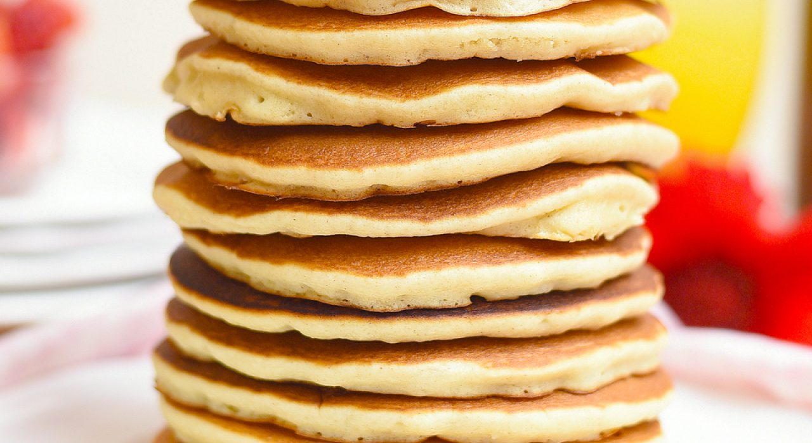

Pancakes

Description
You want to make a good, fast, and funny breakfast? Here's your guide to make them
Ingredients
- 1 cup all-purpose flour
- 2 tablespoons sugar
- 2 teaspoons baking powder
- ½ teaspoon salt
- 1 cup milk
- 2 tablespoons unsalted butter, melted, or vegetable oil
- 1 large egg
- 1 tablespoon vegetable oil
- Toppings
Steps & Indications
- Preheat oven to 200 degrees; In a small bowl, whisk together flour, sugar, baking powder, and salt.
- In a medium bowl, whisk together milk, butter, and egg. Whisk until moistened, but do not overmix.
- Heat a large skillet or griddle over medium. Rub the skillet with oiled paper towel.
- For each pancake, spoon 2 to 3 tablespoons of batter onto skilet.
- Cook until surface of pancakes have some bubbles and a few have burst, 1 to 2 minutes. Flip carefully with a thin spatula, and cook until browned on the underside, 1 to 2 minutes more.
- Serve warm, with desired toppings.